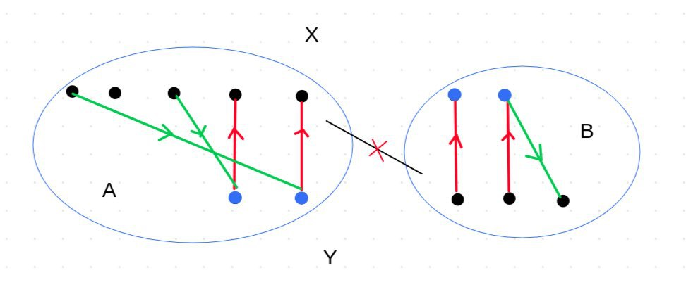

Applications¶
Graphs are one of the most widely used data structures in computer science and mathematics for modeling real-world problems. Below are some key applications:
Network Representation - Used to model computer networks, social networks, transportation systems, etc. - Example of storing a graph using an adjacency matrix:
int graph[5][5] = { {0, 1, 0, 0, 1}, // Get adjacency matrix {1, 0, 1, 1, 0}, {0, 1, 0, 1, 0}, {0, 1, 1, 0, 1}, {1, 0, 0, 1, 0} }; void printEdges() { for(int i=0; i<5; i++) { for(int j=0; j<5; j++) { if(graph[i][j] == 1) cout << i << " connected to " << j << endl; // Get list of adjacent nodes for each node } } }

Social Network Analysis Graphs are a suitable mathematical model for analyzing social networks where nodes represent users and edges represent relationships (e.g., friendship on Facebook). Centrality algorithms help identify influential users.
import networkx as nx # Create graph from adjacency matrix G = nx.Graph() G.add_nodes_from([0,1,2,3,4]) G.add_edges_from([(0,1), (0,4), (1,2), (1,3), (2,3), (3,4)]) # Add edges print(nx.betweenness_centrality(G)) # Calculate betweenness centrality
Transportation Networks Graphs are used in modeling transportation networks where cities are nodes and roads/flight routes are edges. Shortest path algorithms like Dijkstra's algorithm are used in GPS navigation systems (e.g., Google Maps).
In this section, we will see that the two concepts of bipartite graphs and directed graphs are interchangeable. Depending on which one provides better intuition for solving a problem, we can use either.
Consider the adjacency matrix of a bipartite graph and a directed graph. Both are \(n \times n\) matrices with 0s and 1s in their entries. (The matrix is not necessarily symmetric.)
To convert a directed graph to a bipartite graph, it suffices to take the adjacency matrix of the directed graph (denoted as \(M\)) and construct a bipartite graph whose adjacency matrix is \(M\). Converting a bipartite graph to a directed graph is similar. Intuitively, each directed edge \(ab\) in the directed graph corresponds to an edge between vertex \(a\) in the left partition and vertex \(b\) in the right partition of the bipartite graph. That is, the left partition represents "outputs" and the right partition represents "inputs".
Now consider a matching in a bipartite graph. What does this matching transform into when we convert the bipartite graph to a directed graph?
A set of directed cycles and paths! Because in the bipartite graph, at most one edge is selected adjacent to each vertex. This translates to each vertex in the directed graph having at most one incoming edge and at most one outgoing edge.
Decomposition of DAG into Paths¶
We have a directed acyclic graph (DAG). What is the minimum value of \(x\) such that this graph can be decomposed into \(x\) directed paths?
Note that if in this optimal decomposition the number of edges in the paths is \(y\), then \(x + y = n\). Therefore, to minimize \(x\), it suffices to maximize \(y\). Convert the directed graph into a bipartite graph. Now, \(y\) is equal to the maximum matching of this bipartite graph. (Why?)
Partitioning a Directed Graph into Cycles¶
Suppose we want to find a method to partition a directed graph into cycles.
First, convert the graph into a bipartite form. We stated that a matching implies a partitioning into cycles and paths. You can easily conclude that a perfect matching provides us with a partition into cycles. Therefore, it suffices to find a perfect matching in the bipartite graph.
2k-Regular Graph and Decomposition into Cycles¶
This time, our subject is an undirected graph. Similar to the previous problem, suppose we have an undirected graph \(G\) that is known to be 2k-regular. We want to prove that there exists a method to decompose this graph into cycles.
The first idea is that for every edge \(ab\) in \(G\), we place two directed edges \(ab\) and \(ba\) in a directed graph. Then, analogous to the previous problem, we first convert the directed graph into a bipartite form and attempt to find a perfect matching.
The problem that arises here is that in this decomposition, cycles of length 2 (which are essentially single edges) may form, which is undesirable for our purposes.
To prevent this issue, consider the Eulerian tour of the graph and direct each edge according to the traversal direction of the Eulerian tour. (If the graph has multiple connected components, perform this operation for each component separately). The resulting graph is now a directed graph where every vertex has in-degree and out-degree equal to \(k\). If we now convert this graph into bipartite form, every vertex will have degree \(k\).
According to a theorem we previously proved, a k-regular bipartite graph has a perfect matching. Therefore, in this directed graph too, there exists a method to decompose it into cycles.
Tournament Degree Sequence and Matching¶
Suppose we are given a sequence \(d_1,d_2,\ldots,d_n\) where \(\sum\limits_{i=1}^{n} d_i = {n \choose 2}\). We want to determine whether there exists a tournament whose out-degree for each vertex \(u\) equals \(d_u\).
Construct a bipartite graph. The right partition contains \(n\) vertices, and the left partition contains \(n \choose 2\) vertices, where each vertex in the left partition represents an edge of the tournament. Connect the vertex representing edge \(ab\) to vertices \(a\) and \(b\) in the right partition. Now select a subset of edges such that: 1. The degree of every left-side vertex is 1. 2. The degree of vertex \(u\) in the right partition equals \(d_u\). (This resembles the matching condition we examined in the Hall's generalization section.)
Intuitively, each left-side vertex (representing edge \(ab\)) must choose one of the two vertices \(a\) or \(b\). If it chooses \(a\), this means the edge between \(a\) and \(b\) in the tournament is directed from \(a\) to \(b\), and vice versa. Additionally, since vertex \(u\) must have out-degree \(d_u\) in the tournament, every vertex \(u\) in the right partition must be selected by exactly \(d_u\) vertices from the left partition!
From the Hall's generalization results, the necessary and sufficient condition for the existence of such a tournament is: For every subset \(S\) of left-side vertices, if \(P\) is the union of their neighbors in the right partition, then: \(|S| \leq \sum\limits_{u \in P} d_u\)
Since we can maximize the left side of the inequality up to \({|P| \choose 2}\) without changing the right side (why?), the condition can also be written as: \(\forall_{P \subseteq \{1,2,\ldots,n\}} {|P| \choose 2} \leq \sum\limits_{u \in P} d_u\)
Furthermore, since the left side of the inequality depends only on the size of \(P\) and not its specific members, it suffices to verify the condition for the smallest \(d_u\) values. Specifically, assuming \(d_1 \leq d_2 \leq \ldots \leq d_n\), the following condition is necessary and sufficient: \(\forall_{1 \leq k \leq n} {k \choose 2} \leq \sum\limits_{i=1}^{k} d_i\)
Fixed Vertices in Bipartite Matching¶
Consider a bipartite graph. For a matching \(M\), a vertex \(u\) adjacent to any edge in \(M\) is said to be present in \(M\). The task is to determine for every vertex \(u\) whether there exists a maximum matching where \(u\) is not present.
First, choose an arbitrary maximum matching \(M\). For all vertices not present in \(M\), the answer is already known. Our goal is to determine the answer for vertices present in \(M\), such as \(u\). Suppose there exists a maximum matching \(M^{\prime}\) where \(u\) is not present. Let \(H\) be the symmetric difference of \(M\) and \(M^{\prime}\). Then \(H\) must consist of cycles and even-length paths, and \(u\) must be the starting vertex of one of these even-length paths (why?).
Thus, we conclude that for every vertex \(u\) present in \(M\), there exists a maximum matching where \(u\) is not present if and only if there exists an alternating path from a free vertex (a vertex not in \(M\)) to \(u\). Note that since this path is not augmenting (as \(M\) is already maximum), both endpoints of the path must lie in the same partition of the bipartite graph.
Up to this point, we have not used the bipartiteness of the graph (all arguments hold for general graphs). However, to find a maximum matching and identify vertices that are starting points of alternating paths, we now leverage the bipartite structure.
First, find a maximum matching \(M\) using the algorithm described in Section 12.2.
Assume the bipartition of the graph is \(X\) and \(Y\). To solve the problem for partition \(X\), orient the edges as follows: edges in \(M\) are directed from \(Y\) to \(X\), and edges not in \(M\) are directed from \(X\) to \(Y\). Observe that any alternating path starting from a vertex in \(X\) corresponds to a path in this directed graph beginning from a free vertex in \(X\).
Thus, it suffices to orient the graph as described and perform a DFS from every free vertex in \(X\). All reachable vertices in \(X\) lie on an alternating path, implying that for each such vertex, there exists a maximum matching where it is not present.
Similarly, the problem can be solved for partition \(Y\).
Finding a Minimum Vertex Cover in a Bipartite Graph¶
In Section 12.3, we learned that in a bipartite graph, the size of the minimum vertex cover equals the size of the maximum matching. In this section, we will learn how to find the minimum vertex cover given a maximum matching.
First, consider the edges of the maximum matching and call it \(M\). Since for each edge in the matching, one of its endpoints must be included in the vertex cover, exactly one endpoint of each edge in \(M\) must be in the minimum vertex cover (Why?). Thus, for each edge in \(M\), we need to decide whether to include the vertex from the first partition of the graph or the one from the second partition in the vertex cover.
Name the two partitions of the graph \(X\) and \(Y\). Let \(MX\) denote the set of edges in \(M\) for which we select the \(X\) endpoint, and \(MY\) denote the set of edges in \(M\) for which we select the \(Y\) endpoint. Now, we aim to determine \(MX\) and \(MY\).
Similar to the previous section, we orient the edges of the bipartite graph as follows: edges in \(M\) are directed from \(Y\) to \(X\), and edges not in \(M\) are directed from \(X\) to \(Y\). Now, perform a DFS from all unmatched vertices in partition \(X\). Label all vertices reached by this DFS as \(A\), and the remaining vertices as \(B\). Clearly, there are no edges between \(X \cap A\) and \(Y \cap B\) (otherwise, the set \(A\) would change). Therefore, we can select all vertices in \(Y \cap A\) and \(X \cap B\) for the vertex cover. Since there are no exposed vertices in either set (because \(M\) is maximum and thus no augmenting paths exist), this implies that all edges visited in the DFS should be assigned to \(MY\), and the remaining edges to \(MX\). In other words, \(MX = M - MY\).
{kind=link}

This book is made by The Shaazzz contributors.
It is publicly available with cc-by-sa license.
Last updated at آوریل 19, 2025.
Rendered by Sphinx (4.3.2) and Minoo theme (Beta 0.9.7).